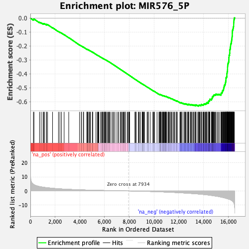
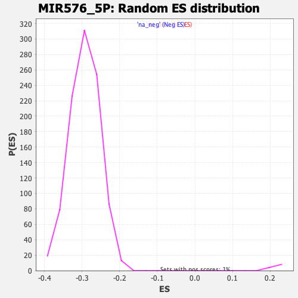

| | | Dataset | DE_genes2 |
| Phenotype | NoPhenotypeAvailable |
| Upregulated in class | na_neg |
| GeneSet | MIR576_5P |
| Enrichment Score (ES) | -0.63113743 |
| Normalized Enrichment Score (NES) | -2.1535995 |
| Nominal p-value | 0.0 |
| FDR q-value | 0.0 |
| FWER p-Value | 0.0 |
Table: GSEA Results Summary

Fig 1: Enrichment plot: MIR576_5P
Profile of the Running ES Score & Positions of GeneSet Members on the Rank Ordered List
| PROBE | GENE SYMBOL | GENE_TITLE | RANK IN GENE LIST | RANK METRIC SCORE | RUNNING ES | CORE ENRICHMENT | | 1 | GRIN2A | | | 247 | 4.670 | -0.0091 | No |
| 2 | EGF | | | 290 | 4.469 | -0.0059 | No |
| 3 | RBM38 | | | 740 | 3.128 | -0.0295 | No |
| 4 | EPHX4 | | | 871 | 2.904 | -0.0337 | No |
| 5 | PEX5L | | | 1028 | 2.701 | -0.0398 | No |
| 6 | MYO5B | | | 1088 | 2.614 | -0.0400 | No |
| 7 | ATP6V1G1 | | | 1134 | 2.560 | -0.0395 | No |
| 8 | KLF10 | | | 1294 | 2.362 | -0.0462 | No |
| 9 | PDXDC1 | | | 1306 | 2.351 | -0.0438 | No |
| 10 | WWP2 | | | 1393 | 2.274 | -0.0461 | No |
| 11 | RAB11A | | | 1794 | 1.923 | -0.0683 | No |
| 12 | BMP2 | | | 2271 | 1.578 | -0.0956 | No |
| 13 | BACE2 | | | 2390 | 1.498 | -0.1009 | No |
| 14 | NALCN | | | 2520 | 1.433 | -0.1070 | No |
| 15 | MRAS | | | 2730 | 1.318 | -0.1181 | No |
| 16 | ENKUR | | | 3102 | 1.154 | -0.1395 | No |
| 17 | CNTNAP2 | | | 3973 | 0.845 | -0.1920 | No |
| 18 | TDRD7 | | | 4113 | 0.805 | -0.1995 | No |
| 19 | TNFRSF11B | | | 4131 | 0.800 | -0.1995 | No |
| 20 | COMMD6 | | | 4278 | 0.756 | -0.2075 | No |
| 21 | ITGBL1 | | | 4308 | 0.746 | -0.2083 | No |
| 22 | FLI1 | | | 4564 | 0.673 | -0.2232 | No |
| 23 | ARMC3 | | | 4599 | 0.662 | -0.2244 | No |
| 24 | MTSS1 | | | 4603 | 0.661 | -0.2237 | No |
| 25 | IRAK3 | | | 4642 | 0.651 | -0.2252 | No |
| 26 | FAXC | | | 4736 | 0.628 | -0.2301 | No |
| 27 | CAST | | | 4756 | 0.623 | -0.2305 | No |
| 28 | SUMO2 | | | 4833 | 0.610 | -0.2344 | No |
| 29 | CUX2 | | | 4868 | 0.602 | -0.2357 | No |
| 30 | ADAMTS5 | | | 5023 | 0.565 | -0.2444 | No |
| 31 | HDAC9 | | | 5031 | 0.563 | -0.2441 | No |
| 32 | SLC9A4 | | | 5040 | 0.560 | -0.2439 | No |
| 33 | FUT4 | | | 5301 | 0.491 | -0.2593 | No |
| 34 | CAMK4 | | | 5407 | 0.468 | -0.2651 | No |
| 35 | MECP2 | | | 5467 | 0.457 | -0.2682 | No |
| 36 | NR3C2 | | | 5498 | 0.450 | -0.2694 | No |
| 37 | FBXO42 | | | 5538 | 0.441 | -0.2713 | No |
| 38 | SLC6A14 | | | 5680 | 0.409 | -0.2794 | No |
| 39 | LEPROT | | | 5743 | 0.395 | -0.2827 | No |
| 40 | SYTL2 | | | 5827 | 0.379 | -0.2874 | No |
| 41 | NCK1 | | | 5834 | 0.378 | -0.2872 | No |
| 42 | ACPP | | | 5875 | 0.371 | -0.2892 | No |
| 43 | ITGB8 | | | 5895 | 0.366 | -0.2899 | No |
| 44 | FMN1 | | | 5987 | 0.348 | -0.2951 | No |
| 45 | ERICH3 | | | 5989 | 0.348 | -0.2947 | No |
| 46 | DSE | | | 6028 | 0.341 | -0.2966 | No |
| 47 | EIF4A2 | | | 6036 | 0.338 | -0.2966 | No |
| 48 | AK7 | | | 6087 | 0.328 | -0.2992 | No |
| 49 | CCDC148 | | | 6123 | 0.320 | -0.3009 | No |
| 50 | IGF2BP2 | | | 6124 | 0.320 | -0.3005 | No |
| 51 | ACVR1B | | | 6237 | 0.295 | -0.3070 | No |
| 52 | NLK | | | 6279 | 0.291 | -0.3092 | No |
| 53 | LAMP2 | | | 6343 | 0.277 | -0.3127 | No |
| 54 | SIX2 | | | 6390 | 0.265 | -0.3152 | No |
| 55 | SORL1 | | | 6401 | 0.263 | -0.3155 | No |
| 56 | POLR1D | | | 6513 | 0.242 | -0.3220 | No |
| 57 | CDH11 | | | 6629 | 0.218 | -0.3288 | No |
| 58 | NPR3 | | | 6715 | 0.199 | -0.3338 | No |
| 59 | HIPK1 | | | 6784 | 0.187 | -0.3377 | No |
| 60 | GRB10 | | | 6928 | 0.166 | -0.3463 | No |
| 61 | DNAL1 | | | 7077 | 0.139 | -0.3553 | No |
| 62 | PER2 | | | 7124 | 0.129 | -0.3579 | No |
| 63 | PXYLP1 | | | 7263 | 0.104 | -0.3663 | No |
| 64 | MGAT4A | | | 7327 | 0.093 | -0.3701 | No |
| 65 | CYYR1 | | | 7375 | 0.084 | -0.3728 | No |
| 66 | TSHZ3 | | | 7457 | 0.073 | -0.3777 | No |
| 67 | METTL9 | | | 7503 | 0.064 | -0.3804 | No |
| 68 | GAS2 | | | 7550 | 0.056 | -0.3832 | No |
| 69 | DCLK1 | | | 7621 | 0.044 | -0.3874 | No |
| 70 | CRISPLD1 | | | 7667 | 0.038 | -0.3902 | No |
| 71 | JADE2 | | | 7672 | 0.037 | -0.3904 | No |
| 72 | PCDHB2 | | | 7823 | 0.014 | -0.3996 | No |
| 73 | C21orf91 | | | 7883 | 0.007 | -0.4032 | No |
| 74 | TULP4 | | | 7961 | -0.005 | -0.4080 | No |
| 75 | AQP4 | | | 7980 | -0.008 | -0.4091 | No |
| 76 | EFCAB11 | | | 8010 | -0.014 | -0.4108 | No |
| 77 | CERK | | | 8028 | -0.016 | -0.4118 | No |
| 78 | ONECUT2 | | | 8448 | -0.084 | -0.4376 | No |
| 79 | CA8 | | | 8509 | -0.095 | -0.4411 | No |
| 80 | RIOK3 | | | 8526 | -0.098 | -0.4420 | No |
| 81 | ZMAT3 | | | 8549 | -0.102 | -0.4432 | No |
| 82 | LONRF2 | | | 8730 | -0.137 | -0.4541 | No |
| 83 | ZNF805 | | | 8769 | -0.148 | -0.4563 | No |
| 84 | NDFIP2 | | | 8819 | -0.155 | -0.4591 | No |
| 85 | SLCO4C1 | | | 8912 | -0.173 | -0.4645 | No |
| 86 | LYSMD4 | | | 9043 | -0.202 | -0.4723 | No |
| 87 | MAP7 | | | 9054 | -0.205 | -0.4726 | No |
| 88 | MEGF11 | | | 9059 | -0.205 | -0.4726 | No |
| 89 | ODF2L | | | 9092 | -0.213 | -0.4743 | No |
| 90 | RBMS3 | | | 9127 | -0.220 | -0.4761 | No |
| 91 | ZFP82 | | | 9175 | -0.233 | -0.4787 | No |
| 92 | CXADR | | | 9210 | -0.243 | -0.4805 | No |
| 93 | STAU2 | | | 9221 | -0.246 | -0.4808 | No |
| 94 | ZC3H12C | | | 9437 | -0.300 | -0.4936 | No |
| 95 | GAB1 | | | 9511 | -0.315 | -0.4977 | No |
| 96 | CMYA5 | | | 9520 | -0.316 | -0.4978 | No |
| 97 | ITGA4 | | | 9537 | -0.320 | -0.4984 | No |
| 98 | LY6K | | | 9686 | -0.365 | -0.5070 | No |
| 99 | MRPS7 | | | 9907 | -0.431 | -0.5200 | No |
| 100 | LAMTOR3 | | | 9932 | -0.438 | -0.5209 | No |
| 101 | PJA2 | | | 9954 | -0.446 | -0.5216 | No |
| 102 | ZNF273 | | | 10029 | -0.469 | -0.5256 | No |
| 103 | ZNF850 | | | 10046 | -0.472 | -0.5260 | No |
| 104 | GDAP2 | | | 10243 | -0.537 | -0.5373 | No |
| 105 | UBE2O | | | 10388 | -0.584 | -0.5454 | No |
| 106 | RBL2 | | | 10451 | -0.603 | -0.5485 | No |
| 107 | GOSR1 | | | 10460 | -0.606 | -0.5482 | No |
| 108 | POLDIP2 | | | 10488 | -0.617 | -0.5490 | No |
| 109 | PIAS1 | | | 10501 | -0.624 | -0.5490 | No |
| 110 | C1GALT1C1L | | | 10515 | -0.631 | -0.5489 | No |
| 111 | CISD2 | | | 10526 | -0.634 | -0.5487 | No |
| 112 | APH1B | | | 10540 | -0.639 | -0.5487 | No |
| 113 | AHR | | | 10601 | -0.664 | -0.5515 | No |
| 114 | MMGT1 | | | 10675 | -0.684 | -0.5551 | No |
| 115 | DGKH | | | 10687 | -0.688 | -0.5549 | No |
| 116 | ADAMTS3 | | | 10712 | -0.694 | -0.5555 | No |
| 117 | WDR33 | | | 10754 | -0.710 | -0.5571 | No |
| 118 | TCAIM | | | 10771 | -0.714 | -0.5572 | No |
| 119 | EFNA5 | | | 10794 | -0.723 | -0.5576 | No |
| 120 | KLF3 | | | 10825 | -0.737 | -0.5585 | No |
| 121 | RFX3 | | | 10837 | -0.739 | -0.5582 | No |
| 122 | INSIG1 | | | 10902 | -0.767 | -0.5611 | No |
| 123 | TOX | | | 10918 | -0.772 | -0.5610 | No |
| 124 | NR4A3 | | | 10943 | -0.779 | -0.5615 | No |
| 125 | MSANTD3 | | | 10954 | -0.784 | -0.5611 | No |
| 126 | YIPF6 | | | 10978 | -0.793 | -0.5615 | No |
| 127 | C11orf54 | | | 11007 | -0.806 | -0.5621 | No |
| 128 | CAV1 | | | 11109 | -0.845 | -0.5673 | No |
| 129 | S1PR3 | | | 11175 | -0.871 | -0.5701 | No |
| 130 | CDCA4 | | | 11178 | -0.873 | -0.5691 | No |
| 131 | KCMF1 | | | 11213 | -0.886 | -0.5701 | No |
| 132 | CD38 | | | 11244 | -0.899 | -0.5707 | No |
| 133 | AFTPH | | | 11345 | -0.948 | -0.5757 | No |
| 134 | NCEH1 | | | 11349 | -0.949 | -0.5746 | No |
| 135 | TTC3 | | | 11432 | -0.981 | -0.5784 | No |
| 136 | CAPS2 | | | 11458 | -0.990 | -0.5786 | No |
| 137 | NFAT5 | | | 11568 | -1.034 | -0.5840 | No |
| 138 | HEXIM1 | | | 11631 | -1.059 | -0.5865 | No |
| 139 | COBLL1 | | | 11674 | -1.077 | -0.5876 | No |
| 140 | C4orf46 | | | 11799 | -1.133 | -0.5938 | No |
| 141 | LUM | | | 11809 | -1.136 | -0.5929 | No |
| 142 | WDR72 | | | 11821 | -1.141 | -0.5921 | No |
| 143 | CADM2 | | | 11895 | -1.177 | -0.5950 | No |
| 144 | ITGA6 | | | 12086 | -1.267 | -0.6051 | No |
| 145 | ZFHX4 | | | 12145 | -1.300 | -0.6070 | No |
| 146 | CD164 | | | 12185 | -1.321 | -0.6076 | No |
| 147 | E2F6 | | | 12205 | -1.329 | -0.6071 | No |
| 148 | SKIL | | | 12213 | -1.332 | -0.6058 | No |
| 149 | ZEB1 | | | 12339 | -1.396 | -0.6117 | No |
| 150 | VEGFA | | | 12342 | -1.396 | -0.6100 | No |
| 151 | HOOK1 | | | 12458 | -1.453 | -0.6152 | No |
| 152 | C10orf88 | | | 12473 | -1.465 | -0.6141 | No |
| 153 | TMEM33 | | | 12494 | -1.473 | -0.6134 | No |
| 154 | FAM126B | | | 12556 | -1.508 | -0.6152 | No |
| 155 | MGARP | | | 12583 | -1.526 | -0.6148 | No |
| 156 | CLTC | | | 12685 | -1.582 | -0.6190 | No |
| 157 | MSX2 | | | 12750 | -1.617 | -0.6208 | No |
| 158 | CCSER2 | | | 12758 | -1.621 | -0.6191 | No |
| 159 | BRWD3 | | | 12760 | -1.622 | -0.6171 | No |
| 160 | CDK6 | | | 12820 | -1.666 | -0.6186 | No |
| 161 | HACE1 | | | 12823 | -1.668 | -0.6165 | No |
| 162 | YBX1 | | | 12942 | -1.739 | -0.6215 | No |
| 163 | NCKAP5 | | | 12970 | -1.750 | -0.6209 | No |
| 164 | CLOCK | | | 12988 | -1.761 | -0.6197 | No |
| 165 | REEP3 | | | 13054 | -1.802 | -0.6213 | No |
| 166 | CCDC39 | | | 13078 | -1.816 | -0.6204 | No |
| 167 | PCLO | | | 13170 | -1.872 | -0.6235 | No |
| 168 | LUZP2 | | | 13224 | -1.906 | -0.6243 | No |
| 169 | SPIN1 | | | 13237 | -1.915 | -0.6226 | No |
| 170 | B3GNT5 | | | 13329 | -1.973 | -0.6256 | No |
| 171 | SLC10A4 | | | 13366 | -2.007 | -0.6252 | No |
| 172 | NAMPT | | | 13369 | -2.009 | -0.6227 | No |
| 173 | HCFC2 | | | 13384 | -2.017 | -0.6209 | No |
| 174 | CDK17 | | | 13500 | -2.098 | -0.6253 | No |
| 175 | GOPC | | | 13596 | -2.161 | -0.6283 | Yes |
| 176 | FAR2 | | | 13609 | -2.170 | -0.6262 | Yes |
| 177 | SENP7 | | | 13629 | -2.183 | -0.6246 | Yes |
| 178 | PCDH10 | | | 13667 | -2.214 | -0.6240 | Yes |
| 179 | FBXL17 | | | 13703 | -2.244 | -0.6232 | Yes |
| 180 | NRIP1 | | | 13789 | -2.322 | -0.6254 | Yes |
| 181 | TXNDC16 | | | 13812 | -2.337 | -0.6237 | Yes |
| 182 | DBT | | | 13817 | -2.342 | -0.6209 | Yes |
| 183 | CKAP5 | | | 13831 | -2.355 | -0.6186 | Yes |
| 184 | LRRCC1 | | | 13939 | -2.445 | -0.6220 | Yes |
| 185 | ZNF670 | | | 13980 | -2.481 | -0.6213 | Yes |
| 186 | THRAP3 | | | 14005 | -2.498 | -0.6195 | Yes |
| 187 | NF1 | | | 14030 | -2.526 | -0.6177 | Yes |
| 188 | BLZF1 | | | 14044 | -2.538 | -0.6152 | Yes |
| 189 | ICA1L | | | 14113 | -2.608 | -0.6160 | Yes |
| 190 | AVL9 | | | 14172 | -2.662 | -0.6161 | Yes |
| 191 | PDE12 | | | 14197 | -2.690 | -0.6140 | Yes |
| 192 | TMEM14A | | | 14204 | -2.696 | -0.6109 | Yes |
| 193 | HBS1L | | | 14264 | -2.752 | -0.6110 | Yes |
| 194 | IGDCC4 | | | 14268 | -2.753 | -0.6075 | Yes |
| 195 | ACSL3 | | | 14291 | -2.776 | -0.6053 | Yes |
| 196 | ENAH | | | 14393 | -2.875 | -0.6078 | Yes |
| 197 | BCAT1 | | | 14397 | -2.877 | -0.6042 | Yes |
| 198 | FZD3 | | | 14403 | -2.879 | -0.6008 | Yes |
| 199 | MIPOL1 | | | 14405 | -2.881 | -0.5971 | Yes |
| 200 | DDX42 | | | 14419 | -2.901 | -0.5941 | Yes |
| 201 | PLEKHA8 | | | 14477 | -2.960 | -0.5937 | Yes |
| 202 | ASPH | | | 14481 | -2.970 | -0.5901 | Yes |
| 203 | TMF1 | | | 14504 | -2.989 | -0.5875 | Yes |
| 204 | DCP2 | | | 14510 | -2.993 | -0.5839 | Yes |
| 205 | FDX1 | | | 14523 | -3.015 | -0.5807 | Yes |
| 206 | RGS5 | | | 14640 | -3.175 | -0.5837 | Yes |
| 207 | GCLM | | | 14646 | -3.180 | -0.5799 | Yes |
| 208 | GDAP1 | | | 14665 | -3.207 | -0.5768 | Yes |
| 209 | AHI1 | | | 14704 | -3.247 | -0.5749 | Yes |
| 210 | ZDHHC17 | | | 14705 | -3.249 | -0.5707 | Yes |
| 211 | PLRG1 | | | 14719 | -3.266 | -0.5673 | Yes |
| 212 | SGPP1 | | | 14724 | -3.269 | -0.5632 | Yes |
| 213 | VTA1 | | | 14767 | -3.322 | -0.5615 | Yes |
| 214 | ENY2 | | | 14785 | -3.340 | -0.5582 | Yes |
| 215 | PPM1A | | | 14816 | -3.381 | -0.5556 | Yes |
| 216 | SCAI | | | 14827 | -3.393 | -0.5518 | Yes |
| 217 | C5orf30 | | | 14877 | -3.472 | -0.5503 | Yes |
| 218 | TRIP11 | | | 14934 | -3.552 | -0.5492 | Yes |
| 219 | CPNE3 | | | 14985 | -3.622 | -0.5475 | Yes |
| 220 | NR3C1 | | | 15016 | -3.666 | -0.5446 | Yes |
| 221 | HPRT1 | | | 15127 | -3.819 | -0.5464 | Yes |
| 222 | LCLAT1 | | | 15199 | -3.917 | -0.5457 | Yes |
| 223 | ARHGAP5 | | | 15292 | -4.102 | -0.5460 | Yes |
| 224 | FNDC3A | | | 15410 | -4.320 | -0.5476 | Yes |
| 225 | MRPL42 | | | 15420 | -4.346 | -0.5425 | Yes |
| 226 | CUL3 | | | 15431 | -4.357 | -0.5374 | Yes |
| 227 | STXBP3 | | | 15488 | -4.455 | -0.5350 | Yes |
| 228 | CEBPZOS | | | 15511 | -4.505 | -0.5305 | Yes |
| 229 | IKZF5 | | | 15525 | -4.537 | -0.5254 | Yes |
| 230 | CAPZA2 | | | 15538 | -4.569 | -0.5202 | Yes |
| 231 | ZFX | | | 15584 | -4.668 | -0.5169 | Yes |
| 232 | MOB1B | | | 15615 | -4.752 | -0.5125 | Yes |
| 233 | NUFIP2 | | | 15626 | -4.769 | -0.5069 | Yes |
| 234 | CHIC1 | | | 15632 | -4.780 | -0.5010 | Yes |
| 235 | NBPF1 | | | 15652 | -4.817 | -0.4959 | Yes |
| 236 | SP4 | | | 15666 | -4.846 | -0.4904 | Yes |
| 237 | TMTC3 | | | 15685 | -4.876 | -0.4852 | Yes |
| 238 | PRPF38B | | | 15698 | -4.909 | -0.4795 | Yes |
| 239 | LARP4 | | | 15744 | -5.000 | -0.4758 | Yes |
| 240 | ACTR2 | | | 15753 | -5.013 | -0.4697 | Yes |
| 241 | RSRC2 | | | 15780 | -5.075 | -0.4647 | Yes |
| 242 | DDHD1 | | | 15784 | -5.083 | -0.4583 | Yes |
| 243 | LPP | | | 15802 | -5.131 | -0.4526 | Yes |
| 244 | RB1 | | | 15805 | -5.145 | -0.4460 | Yes |
| 245 | ZDHHC21 | | | 15817 | -5.173 | -0.4400 | Yes |
| 246 | PCGF5 | | | 15818 | -5.180 | -0.4332 | Yes |
| 247 | POU2F1 | | | 15822 | -5.196 | -0.4266 | Yes |
| 248 | ETNK1 | | | 15864 | -5.301 | -0.4223 | Yes |
| 249 | TRIM23 | | | 15885 | -5.356 | -0.4165 | Yes |
| 250 | PDS5A | | | 15889 | -5.372 | -0.4097 | Yes |
| 251 | PNRC2 | | | 15890 | -5.375 | -0.4027 | Yes |
| 252 | SCAF11 | | | 15893 | -5.377 | -0.3958 | Yes |
| 253 | KAT6A | | | 15910 | -5.415 | -0.3897 | Yes |
| 254 | RNF138 | | | 15915 | -5.434 | -0.3829 | Yes |
| 255 | MAP9 | | | 15939 | -5.481 | -0.3772 | Yes |
| 256 | TMEM38B | | | 15940 | -5.487 | -0.3700 | Yes |
| 257 | FMR1 | | | 15943 | -5.491 | -0.3630 | Yes |
| 258 | PTPN4 | | | 15944 | -5.492 | -0.3558 | Yes |
| 259 | ZNF131 | | | 15947 | -5.501 | -0.3488 | Yes |
| 260 | NFXL1 | | | 15952 | -5.522 | -0.3418 | Yes |
| 261 | USP47 | | | 15962 | -5.548 | -0.3352 | Yes |
| 262 | ANKRD28 | | | 15963 | -5.550 | -0.3279 | Yes |
| 263 | UBR3 | | | 15998 | -5.655 | -0.3227 | Yes |
| 264 | ZHX1 | | | 16007 | -5.690 | -0.3157 | Yes |
| 265 | CETN3 | | | 16040 | -5.798 | -0.3102 | Yes |
| 266 | ZNF507 | | | 16045 | -5.808 | -0.3028 | Yes |
| 267 | GPATCH11 | | | 16050 | -5.815 | -0.2955 | Yes |
| 268 | SNX10 | | | 16053 | -5.823 | -0.2880 | Yes |
| 269 | SLC4A7 | | | 16056 | -5.834 | -0.2806 | Yes |
| 270 | TMPO | | | 16067 | -5.864 | -0.2735 | Yes |
| 271 | YTHDF3 | | | 16068 | -5.866 | -0.2659 | Yes |
| 272 | TRIM33 | | | 16112 | -5.982 | -0.2607 | Yes |
| 273 | IL6ST | | | 16114 | -5.982 | -0.2530 | Yes |
| 274 | TM9SF3 | | | 16123 | -6.023 | -0.2457 | Yes |
| 275 | ZFP30 | | | 16125 | -6.025 | -0.2379 | Yes |
| 276 | NECAB1 | | | 16126 | -6.032 | -0.2300 | Yes |
| 277 | FAM169A | | | 16139 | -6.076 | -0.2228 | Yes |
| 278 | DIAPH3 | | | 16163 | -6.183 | -0.2162 | Yes |
| 279 | ZNF326 | | | 16170 | -6.212 | -0.2085 | Yes |
| 280 | KCNMA1 | | | 16184 | -6.275 | -0.2011 | Yes |
| 281 | GCFC2 | | | 16191 | -6.300 | -0.1932 | Yes |
| 282 | ZNF146 | | | 16198 | -6.316 | -0.1854 | Yes |
| 283 | ANKRD29 | | | 16233 | -6.488 | -0.1790 | Yes |
| 284 | PRPF40A | | | 16254 | -6.575 | -0.1717 | Yes |
| 285 | IPMK | | | 16262 | -6.640 | -0.1635 | Yes |
| 286 | N4BP2 | | | 16280 | -6.769 | -0.1557 | Yes |
| 287 | ZNF181 | | | 16291 | -6.828 | -0.1474 | Yes |
| 288 | RC3H1 | | | 16302 | -6.867 | -0.1391 | Yes |
| 289 | THAP5 | | | 16313 | -6.927 | -0.1307 | Yes |
| 290 | ZNF770 | | | 16325 | -7.007 | -0.1222 | Yes |
| 291 | SLC16A7 | | | 16328 | -7.023 | -0.1132 | Yes |
| 292 | AGGF1 | | | 16330 | -7.050 | -0.1041 | Yes |
| 293 | KRR1 | | | 16337 | -7.113 | -0.0952 | Yes |
| 294 | APPL1 | | | 16345 | -7.186 | -0.0862 | Yes |
| 295 | GOLIM4 | | | 16378 | -7.455 | -0.0785 | Yes |
| 296 | PGGT1B | | | 16396 | -7.700 | -0.0695 | Yes |
| 297 | FGF2 | | | 16419 | -7.977 | -0.0605 | Yes |
| 298 | SLC7A11 | | | 16437 | -8.120 | -0.0509 | Yes |
| 299 | CFAP97 | | | 16440 | -8.149 | -0.0404 | Yes |
| 300 | PUM2 | | | 16445 | -8.221 | -0.0300 | Yes |
| 301 | MGA | | | 16456 | -8.443 | -0.0196 | Yes |
| 302 | ARHGAP11A | | | 16467 | -8.620 | -0.0090 | Yes |
| 303 | KCNQ5 | | | 16496 | -9.855 | 0.0022 | Yes |
Table: GSEA details [plain text format]

Fig 2: MIR576_5P: Random ES distribution
Gene set null distribution of ES for MIR576_5P